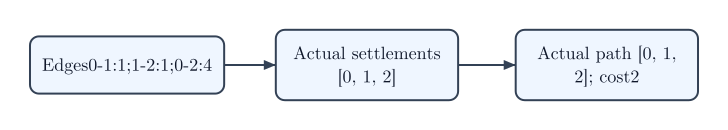
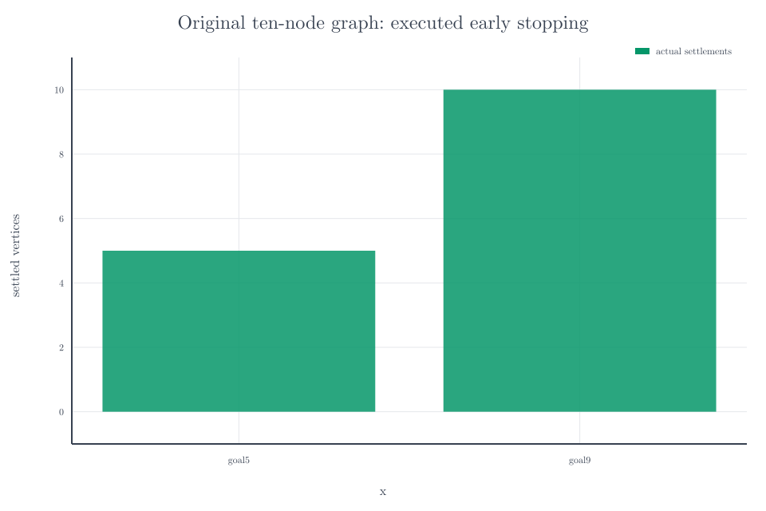
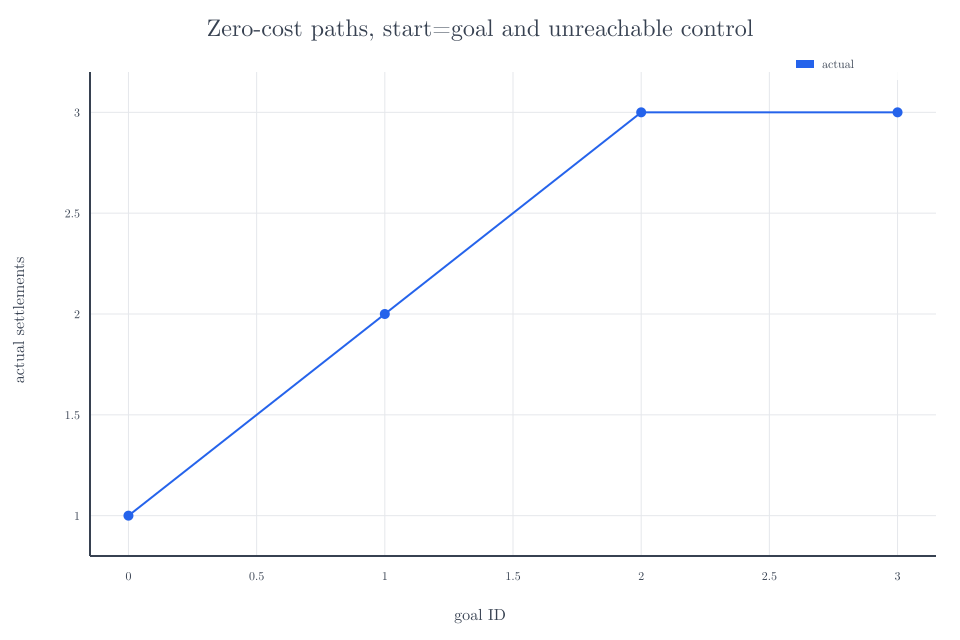
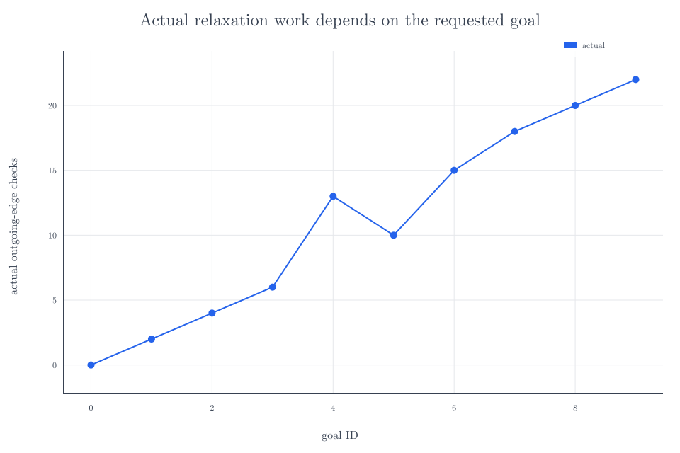

Uniform-cost search: actual goal-directed settlements
Abstract
A cheapest route in a weighted graph can be found without settling every reachable vertex when only one goal matters. Uniform-cost search orders the frontier by accumulated nonnegative path cost.
The method
The smallest tentative distance is final when removed from the priority queue: any alternative route would cross a settled-to-unsettled edge and cannot decrease cost with nonnegative weights. This induction justifies stopping when the goal is settled. Vertices at equal distance may settle before the goal according to the vertex-ID tie rule; the original strict “only cheaper” wording is therefore too strong. Complete graph validation precedes early termination.
Simple worked example
#include <dm/dm.hpp>
int main() {
namespace a = dm::algorithms;
namespace g = dm::graphics;
std::filesystem::create_directories("build");
auto r = a::uniform_cost_search(3, {{{1, 1}, {2, 4}}, {{2, 1}}, {}}, 0, 2);
std::print("| actual settled | costs | actual path | goal cost " "|\n|---|---|---|---:|\n|`{}`|`{}`|`{}`|{}|\n",
r.settled, r.settled_costs, r.path, r.cost);
g::Diagram concept_diagram(48, 1100);
concept_diagram.node("n0", {0, 0}, "Edges0-1:1;1-2:1;0-2:4");
concept_diagram.node("n1", {5, 0},
std::format("Actual settlements {}", r.settled));
concept_diagram.node("n2", {10, 0},
std::format("Actual path {}; cost{}", r.path, r.cost));
concept_diagram.edge("n0", "n1").edge("n1", "n2");
concept_diagram.save_svg("build/uniform_cost_search_tiny.svg");
}| actual settled | costs | actual path | goal cost |
|---|---|---|---|
[0, 1, 2] | [0, 1, 2] | [0, 1, 2] | 2 |

The retained original experiment
#include <dm/dm.hpp>
int main() {
namespace a = dm::algorithms;
namespace g = dm::graphics;
std::filesystem::create_directories("build");
auto graph = a::uniform_cost_example_graph();
auto r = a::uniform_cost_search(10, graph, 0, 5);
auto far = a::uniform_cost_search(10, graph, 0, 9);
std::print("| goal | actual path | cost | settled " "|\n|---:|---|---:|---:|\n|5|`{}`|{}|{}|\n|9|`{}`|{}|{}|\n",
r.path, r.cost, r.expanded, far.path, far.cost, far.expanded);
auto p =
g::RPlot::barplot({double(r.expanded), double(far.expanded)},
{"goal5", "goal9"}, "actual settlements",
{5, 150, 105});
p.title("Original ten-node graph: executed early stopping").y_label(
"settled vertices");
p.save_svg("build/uniform_cost_search_original.svg");
}| goal | actual path | cost | settled |
|---|---|---|---|
| 5 | [0, 1, 3, 5] | 6 | 5 |
| 9 | [0, 1, 3, 5, 6, 7, 8, 9] | 15 | 10 |

Checking the theory and controls
#include <dm/dm.hpp>
int main() {
namespace a = dm::algorithms;
namespace g = dm::graphics;
std::filesystem::create_directories("build");
std::vector<double> x, y;
std::print("| goal | found | cost if found | settled |\n|---:|---|---:|---:|\n");
for (int goal = 0; goal < 4; ++goal) {
auto r =
a::uniform_cost_search(4, {{{1, 0}}, {{2, 0}}, {}, {}}, 0, goal);
std::print("|{}|{}|{}|{}|\n", goal, r.found, r.cost, r.expanded);
x.push_back(goal);
y.push_back(r.expanded);
}
auto p = g::RPlot::create();
p.line(x, y, "actual", {37, 99, 235}, 2);
p.points(x, y, "", {37, 99, 235}, 5);
p.title("Zero-cost paths, start=goal and unreachable control").x_label(
"goal ID").y_label("actual settlements");
p.save_svg("build/uniform_cost_search_controls.svg");
}| goal | found | cost if found | settled |
|---|---|---|---|
| 0 | true | 0 | 1 |
| 1 | true | 0 | 2 |
| 2 | true | 0 | 3 |
| 3 | false | 0 | 3 |

Sensitivity and selected work
#include <dm/dm.hpp>
int main() {
namespace a = dm::algorithms;
namespace g = dm::graphics;
std::filesystem::create_directories("build");
auto graph = a::uniform_cost_example_graph();
std::vector<double> x, y;
std::print("| goal | cost | settled | edge checks | successful relaxations " "|\n|---:|---:|---:|---:|---:|\n");
for (int goal = 0; goal < 10; ++goal) {
auto r = a::uniform_cost_search(10, graph, 0, goal);
std::print("|{}|{}|{}|{}|{}|\n", goal, r.cost, r.expanded,
r.edge_checks, r.relaxations);
x.push_back(goal);
y.push_back(r.edge_checks);
}
auto p = g::RPlot::create();
p.line(x, y, "actual", {37, 99, 235}, 2);
p.points(x, y, "", {37, 99, 235}, 5);
p.title("Actual relaxation work depends on the requested goal").x_label(
"goal ID").y_label("actual outgoing-edge checks");
p.save_svg("build/uniform_cost_search_work.svg");
}| goal | cost | settled | edge checks | successful relaxations |
|---|---|---|---|---|
| 0 | 0 | 1 | 0 | 0 |
| 1 | 2 | 2 | 2 | 2 |
| 2 | 3 | 3 | 4 | 3 |
| 3 | 4 | 4 | 6 | 3 |
| 4 | 8 | 6 | 13 | 6 |
| 5 | 6 | 5 | 10 | 5 |
| 6 | 9 | 7 | 15 | 6 |
| 7 | 11 | 8 | 18 | 8 |
| 8 | 13 | 9 | 20 | 9 |
| 9 | 15 | 10 | 22 | 10 |

Interpretation and limits
Negative/nonfinite weights, invalid endpoints and adjacency shape mismatches throw even if the malformed edge is beyond the goal. Finite path-sum overflow also throws. found=false distinguishes unreachable from a valid zero-cost path. The plot compares two executed searches, rather than relabelling n as measured full Dijkstra work.
The complete editable C++ programs save figures locally; results contain ordinary computed Markdown. Selected counters describe actual producer operations, excluding validation when stated.
References
The recurrence and proof above derive the implemented behavior.
Verified in the shared ten-document batch: 84 scoped native cases;20 directly
instrumented ASan/UBSan cases;45 executable public examples;127/127 definitions
across12 full scopes;10 hovers;2400 independent records/9344 checks;9 frozen
valid-input families plus the unchanged shared merge producer;11
checkout/installed standalone headers and linked ten-family consumer;40 executed
programs and40 inspected figures with both exports. Receipts:
build/mepml-conversion/batch-414-423/.